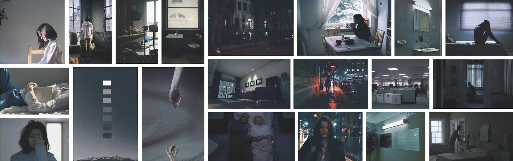
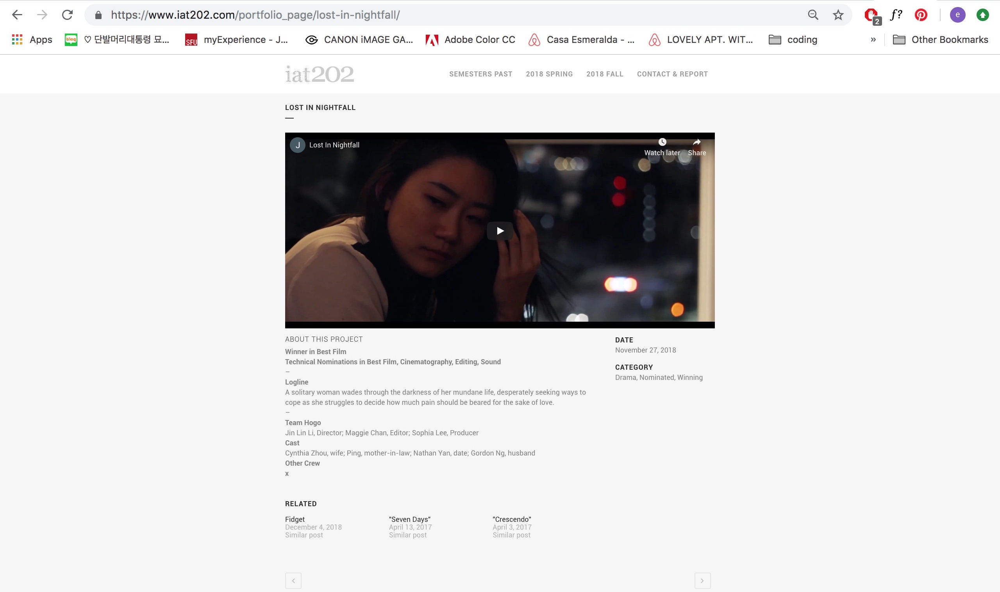
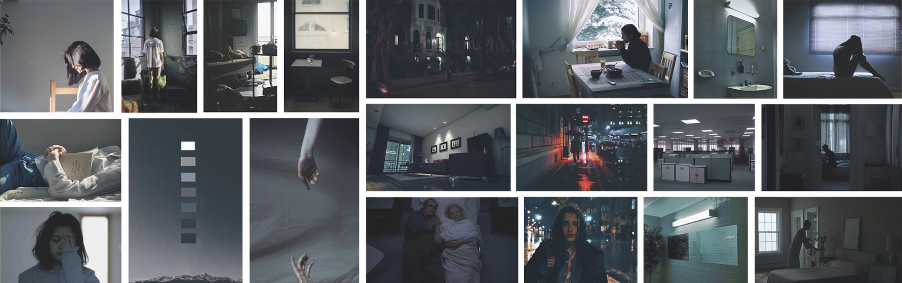
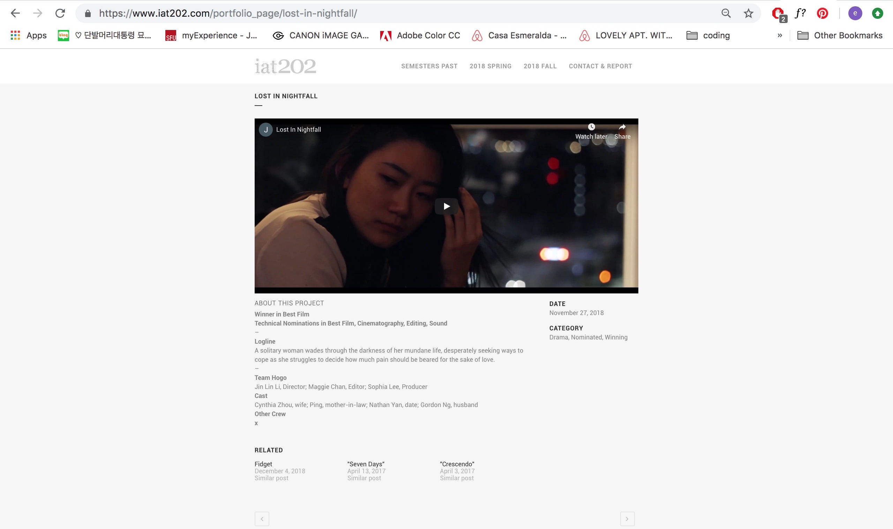
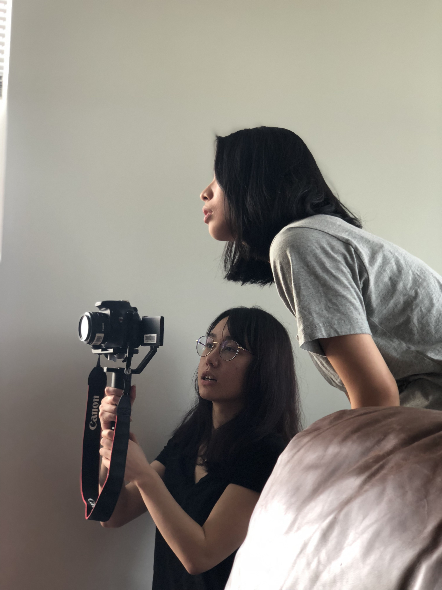
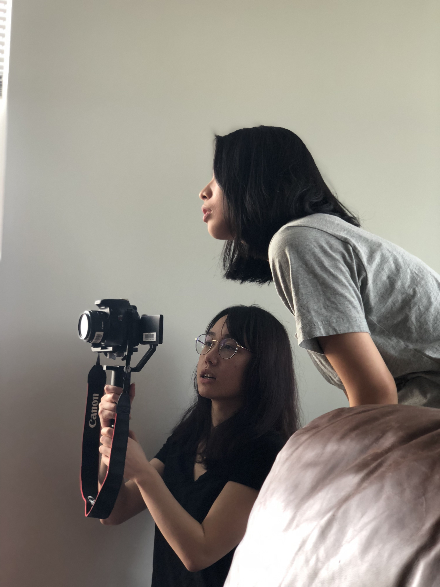

lost in nightfall
Lost in Nightfall is a short film about a solitary woman wading through the darkness of her mundane life. She desperately seeks ways to cope as she struggles to decide how much pain should be beared for the sake of love.
< 02 / 02
2018.10-11
context: 5-week course project
contribution: scriptwriting,pre-production, production
team members: Maggie Chan, Jinlin Li
problem + limitation
The main concern and limitation through out the project were continuity and time management. The project was only given 5 week to ideate, scout location, casts, film, and edit the film with small team of 3 and low budget. The time and budget did not allow test shooting nor location assessment prior to the actual shooting days.
As a short film project, the process was divided into 3 parts: pre-production, production, and post-production. During pre-production, most ideations were done as a group. We had a mutual goal of creating a drama film therefore we individually ideated different stories in the genre, then voted the one we wanted to move forward. After deciding the outline, we developed the story further as a group by finalizing the details and meanings within the film. We decided the shot list, moodboard, general location, and rough storyboard as a group. Our solution to allowing ourselves sufficient time for backup shooting and post-production was to minimize the variation of scenes to avoid shooting in various locations. The minimized scene variation also contributed to the simple aesthetic we wanted to achieve in our film.
role
For pre-production, I was in charge of refining the storyboard and scouting for locations for the office scene. I searched for co-working spaces in lower mainland, then contacted the ones that matched our vision. During production, I assisted in following the production schedule to assure all shots are filmed. I was also responsible to propose different shots and angles that utilize the space better in order to allow more variation during editing, which will also enhance continuity. Also, I assisted in handling equipments such as sound and lighting.
result
Not only the project received high mark from the course instructors, we received the “Best Film Award” of the semester. Particularly, the film was complemented for handling mature, in-depth content with articulated cinematography and art direction.
 



 
